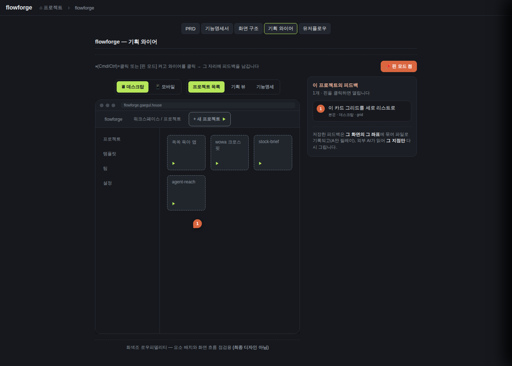
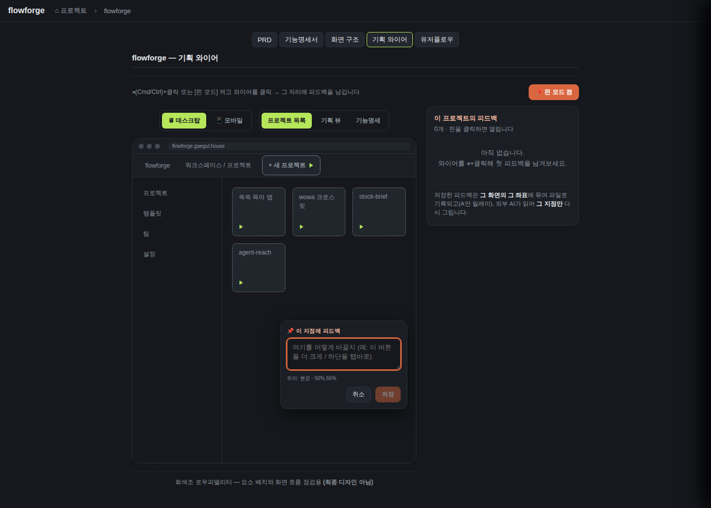
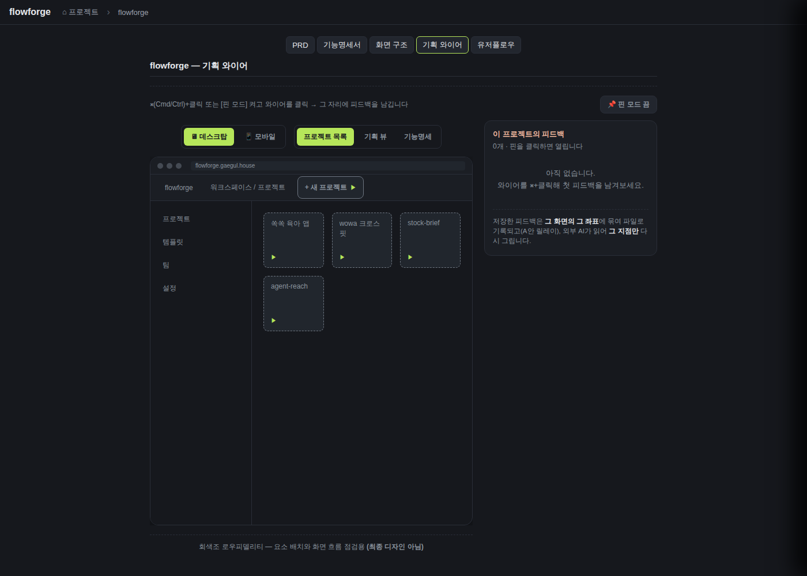
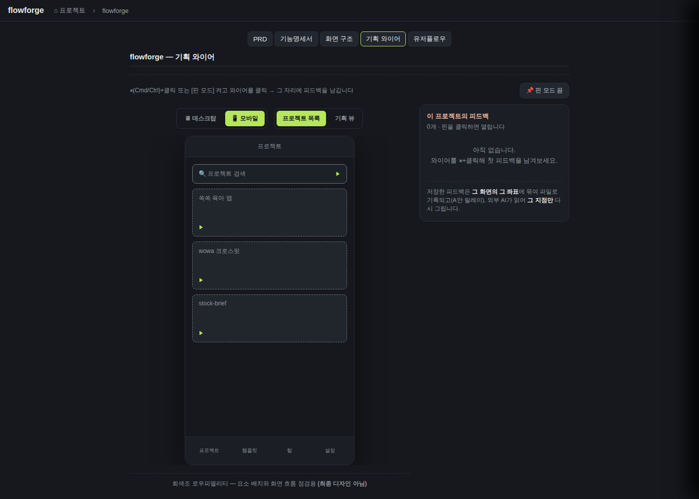
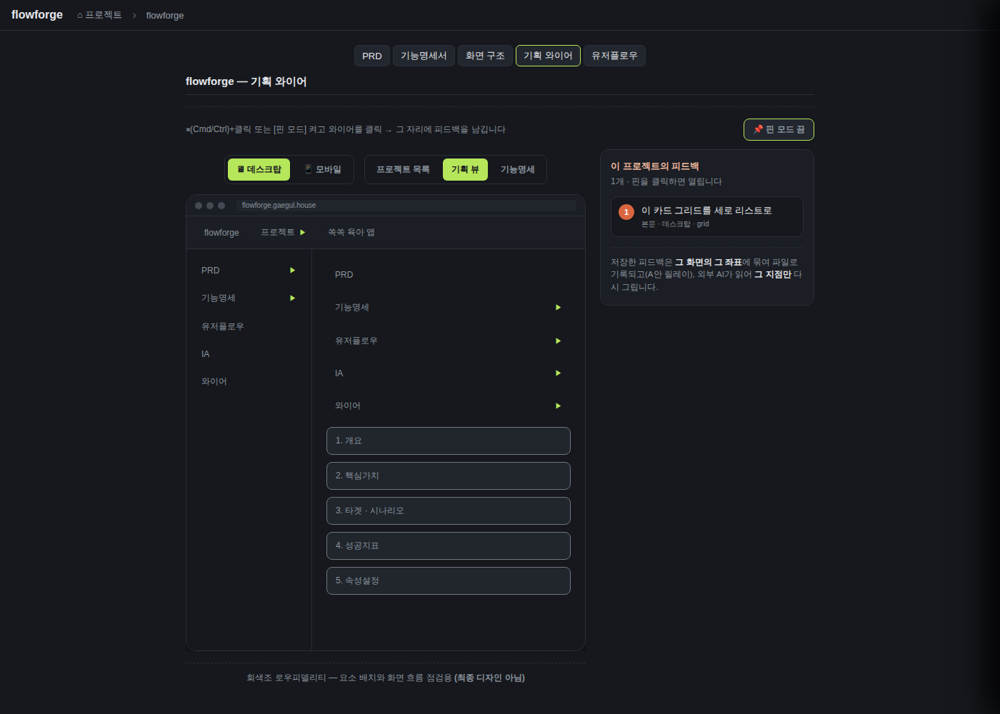

검증일: 2026-07-10T07:53:50+00:00 · 환경: server(jest 455 passed)+web(gstack live 8812) · run: run-20260710-0753 · commit 619d18ed (dirty)
PASS 25 · FAIL 0 · 검증 안 함 1 · SKIPPED 0
| Requirement | Scenario | Layer | 검증 수단 | 탐지 근거(basis) | 결과 | 증거 |
|---|---|---|---|---|---|---|
| generation — 외부 스킬이 와이어 레이아웃 제안을 생성한다 | 원천 3종에서 레이아웃 생성 | server | 계약 검증(생성은 flowforge 밖) — WireScreen2 스키마 가드 test(device·regions·body layout·요소 kind 8종) | wireDocs.test.ts '정상 제안은 통과한다'(:68)+'layout이 없으면 거부'+'device 어휘 밖(tablet) 거부'+'body.layout 어휘 밖(carousel) 거부'+'요소 kind 8종 밖 거부'+'8종 kind 모두 허용'. isValidWireScreen2 가드. 개별 실행 54 passed. | ✓ PASS | npm test EXIT=0(PIPESTATUS), wireDocs.test.ts 스키마 가드 6종 passed |
| generation — 외부 스킬이 와이어 레이아웃 제안을 생성한다 | 화면 id는 화면목록과 정합한다 | server | goto 유효 화면 id 정합 + 화면 id 집합 공유 test(픽스처/스키마 레벨) | planningWireframeFixture.test.ts '모든 goto는 정의된 화면 id를 가리킨다(끊긴 링크 없음)'(:59)+'화면 id는 화면목록 규약과 공유'+'모바일 요소 goto는 모바일 화면을 가리킨다'(:19). 스킬 생성 큐 자체는 아니나 계약상 충분. | ✓ PASS | planningWireframeFixture.test.ts goto 정합 3종 passed |
| generation — 외부 스킬이 와이어 레이아웃 제안을 생성한다 | 순차 게이트 — 선행 문서 없으면 생성 안 함 | server | 생성 로직이 flowforge 밖 스킬 — 순차 게이트는 스킬 계약(flowforge 실행/검증 수단 없음) | flowforge에 생성 호출 0건(G4 grep). 순차 게이트를 flowforge가 강제하지 않으므로 flowforge 측 검증 수단 없음 — 범위 밖(계약). | ? 검증 안 함 | flowforge 밖 스킬 계약 — flowforge에서 검증 불가(범위 밖) |
| generation — 외부 스킬이 와이어 레이아웃 제안을 생성한다 | 생성 주체는 flowforge 밖 | server | 코드 부재 속성(grep) — server/src 전수에 LLM/생성 호출 0건 | grep -rniE 'openai|anthropic|claude|llm|gpt|gemini|completions|generateContent' server/src(테스트 제외)=0건. 외부 http 생성 클라이언트(axios/node-fetch/https.request)=0건. flowforge는 스킬이 쓴 큐 파일만 읽는 거울. | ✓ PASS | grep 결과: NO LLM/AI CALL FOUND in server src / NO external http client for generation |
| approval-queue — 와이어 레이아웃 제안 큐를 읽는다 | 큐 파일 부재 → 빈 큐 200 | server | 라우트+lib test: 큐 파일 없으면 {version:1,suggestions:[]} 200 | docsWireframeApproval.test.ts 'GET planning-wireframe-suggestions — 큐 없으면 200 + 빈 큐(404 아님)'(:76, status===200 body 검증). wireDocs.test.ts '큐 파일이 없으면 빈 큐를 반환한다(404 아님)'(:116). | ✓ PASS | 라우트+lib 부재 200 빈큐 passed |
| approval-queue — 와이어 레이아웃 제안 큐를 읽는다 | 깨진 JSON·스키마 위반 → 유효분만 필터 | server | lib test: 깨진 JSON→빈 큐(throw 금지), 스키마 위반 항목 필터 | wireDocs.test.ts '깨진 JSON이면 빈 큐를 반환한다(throw 금지)'(:121)+'스키마 위반 항목은 필터하고 유효분만 반환한다'(:127). | ✓ PASS | 깨진JSON·스키마위반 필터 2종 passed |
| approval-queue — 와이어 레이아웃 제안 큐를 읽는다 | id 중복 dedup | server | lib test: first-occurrence-wins dedup | wireDocs.test.ts 'id 중복은 first-occurrence-wins로 dedup'(:137). | ✓ PASS | id dedup first-occurrence-wins passed |
| approval-queue — 와이어 레이아웃 제안 큐를 읽는다 | 제안 아이템은 WireScreen2 레이아웃을 담는다 | server | lib+라우트 test: id+screenId+WireScreen2 레이아웃 파싱(optional rationale은 코드 허용·미assert) | wireDocs.test.ts '정상 큐를 파싱해 반환한다'(:107, .id/.screenId assert). docsWireframeApproval.test.ts 'GET ... 큐 있으면 200 + 제안 목록'(:67). rationale 필드는 isValidWireSuggestion에서 수용되나 별도 assert는 없음. | ✓ PASS | 제안 아이템 id/screenId/레이아웃 파싱 passed(rationale 수용은 코드상) |
| approval-apply — 승인된 와이어 제안만 반영한다 | 승인분만 반영, 반려는 큐에서만 제거 | server | lib+라우트 test: 승인 레이아웃만 원천 반영, 반려는 큐에서만 제거, applied/rejected/remaining 반환 | wireDocs.test.ts '승인분만 반영...되고 반려는 큐에서만 제거'(:178). docsWireframeApproval.test.ts 'POST apply — 단일 승인 시 승인분 반영 + 결과 반환'(:91)+'POST apply — 반려 시 원천 불변(큐에서만 제거)'(:103). | ✓ PASS | 승인분 반영+반려 큐제거 3종 passed |
| approval-apply — 승인된 와이어 제안만 반영한다 | self-roundtrip 방어 — 쓰기 전 재파싱 검증 | server | lib+라우트 test: 화면 id 집합 불변식 위반 시 422+원본 보존(writeFailed). wireframeInvariantHolds가 before/after 화면 id 집합 비교 | wireDocs.test.ts 'self-roundtrip: 승인 화면 id가 기존 화면 집합 밖(신규)이면 화면 id 집합이 커져 writeFailed'(:206)+화면 id 집합 4케이스(같음/제거/추가/변경). docsWireframeApproval.test.ts 'POST apply — 신규 화면 id 승인은 화면 집합 위반 → 422(원본 보호)'(:135, error=wireframe_write_failed). | ✓ PASS | self-roundtrip 422 원본보존 + 불변식 4케이스 passed |
| approval-apply — 승인된 와이어 제안만 반영한다 | 처리 못 한 id 표면화 | server | lib+라우트 test: 큐에 없는 id → skipped 반환(silent drop 금지) | wireDocs.test.ts '미실재 id는 skipped로 표면화한다(silent drop 금지)'(:215). docsWireframeApproval.test.ts 'POST apply — 미실재 id는 skipped로 표면화'(:114). | ✓ PASS | 미실재 id skipped 표면화 2종 passed |
| approval-apply — 승인된 와이어 제안만 반영한다 | 문서 반영 성공 + 큐 정리 실패 → 부분반영 고지 | server | lib test: prune 쓰기 실패(chmod 0o444) 시 throw 없이 queuePruneFailed=true, 승인분은 반영 | wireDocs.test.ts 'prune 쓰기 실패 시 throw하지 않고 queuePruneFailed=true, 승인분은 반영된다'(:245). | ✓ PASS | queuePruneFailed 부분반영 고지 passed |
| approval-apply — 승인된 와이어 제안만 반영한다 | 배치 상한 | server | 라우트 test: approve+reject > 200 → 400(APPLY_BATCH_CAP) | docsWireframeApproval.test.ts 'POST apply — 배치 상한(201건) 초과 시 400'(:143, error=batch_too_large). docs.ts APPLY_BATCH_CAP=200. | ✓ PASS | 배치 상한 201건→400 passed |
| feedback-write — 와이어 지점 단위 피드백을 기록한다 | 와이어 지점에 피드백 남기기 | web | 라이브 e2e: 핀모드 클릭(본문 50%,55%)→팝오버→텍스트 저장→서버 사이드카 {screenId,text,ts,xPct,yPct,region} append, AI 호출 0. lib+라우트 test로도 커버 | gstack 라이브: 컨테이너 /data/wireframe-feedback/*.feedback.json에 {screenId:grid,text:'이 카드 그리드를 세로 리스트로',ts,xPct:50,yPct:54.86,region:본문} 실제 write 확인(스크린샷). wireDocs.test.ts '좌표를 찍어 피드백을 남기면 {screenId,text,ts,xPct,yPct,region}가 append 되고 ok:true'(:312). docsWireframeApproval.test.ts 'POST feedback ... 200 + 사이드카 append'(:153). | ✓ PASS |  |
| feedback-write — 와이어 지점 단위 피드백을 기록한다 | 좌표 유효성 방어 | server | lib+라우트 test: xPct/yPct 0~100 밖·비숫자·NaN/Infinity → 400/ok:false, 파일 미기록 | docsWireframeApproval.test.ts '좌표가 0~100 범위 밖이면 400, 파일 미기록'(:194)+'좌표 없으면 400'(:186). wireDocs.test.ts '좌표가 0~100 범위 밖이면 거부(ok:false, 파일 미기록)'(:359)+'숫자 아니거나 NaN/Infinity면 거부'(:366). | ✓ PASS | 좌표 범위/비숫자/NaN/Infinity 400·ok:false 4종 passed |
| feedback-write — 와이어 지점 단위 피드백을 기록한다 | 피드백 write는 flowforge의 유일한 사람→AI 역방향 경로 | server | lib test: 자유 텍스트가 서버 파일(WIREFRAME_FEEDBACK_ROOT 사이드카)에 write, AI 호출 없음. 그 파일을 외부 스킬이 읽음 | wireDocs.test.ts '피드백 파일은 docsDir(홈 RO)가 아니라 WIREFRAME_FEEDBACK_ROOT 하위에 쓴다(D5)'(:374). appendWireframeFeedback 경로에 AI/생성 호출 없음(G4). 라이브에서 컨테이너 /data/wireframe-feedback에 write 확인. | ✓ PASS | WIREFRAME_FEEDBACK_ROOT 사이드카 write + AI 호출 0 확인 |
| feedback-write — 와이어 지점 단위 피드백을 기록한다 | 빈 텍스트·미존재 화면 방어 | server | lib+라우트 test: 빈 텍스트 거부 + 미존재 화면 id 거부(ok:false·400, 파일 미기록). 라이브 재현으로 이중 검증 | 빈텍스트: wireDocs.test.ts '빈 텍스트(공백만)는 거부(ok:false, 파일 미기록)'(:352), docsWireframeApproval.test.ts 'POST feedback — 빈 텍스트는 400'(:178). 미존재 화면(fix 48bcd2a): appendWireframeFeedback(wireDocs.ts:327-330)이 buildDocsPlanningWireframe2 화면 id 집합에 없으면 {ok:false} 거부. wireDocs.test.ts '현재 와이어에 없는 화면 id면 거부한다(ok:false, 파일 미기록) — 쓰레기 피드백 방지'. server npm test 455 passed(정식, EXIT=0). 라이브: 재빌드 컨테이너에 POST screenId='ghost-nonexistent'→HTTP 400 파일 미기록, screenId='grid'→200 기록, 파일엔 grid만 존재. | ✓ PASS | server npm test 455 passed(신규 ghost-screen 거부 test 포함). 라이브 재현: ghost-nonexistent→400(미기록), grid→200(기록), 사이드카에 grid만. |
| feedback-regen — 재생성분을 재조회로 반영한다 | 그 화면만 재생성 반영 | server | 라우트 test: 큐 갱신 후 승인하면 그 화면만 바뀌고 타 화면(승인분) 불변(D6 격리). 재생성은 외부 스킬이라 큐 파일 덮어써 시뮬레이션 | docsWireframeApproval.test.ts '재생성 격리 — 큐 갱신 후 승인하면 그 화면만 바뀌고 타 화면은 불변(D6)'(:216). 격리 불변식 커버. feedback→regen 트리거 자체는 스킬 몫(범위 밖). | ✓ PASS | D6 재생성 격리 — 그 화면만 반영, 타 화면 승인분 불변 passed |
| feedback-regen — 재생성분을 재조회로 반영한다 | 재생성 전에는 기존 레이아웃 유지 | server | lib test: 승인분 JSON 없으면 픽스처 유지, 반려 시 원천 불변. feedback write는 와이어 원천(사이드카 분리)을 건드리지 않음. 접수됨은 UI 표시로 확인 | wireDocs.test.ts '승인분 JSON이 없으면 기존 픽스처를 반환한다(1단계 렌더 폴백 유지)'(:281). feedback write와 와이어 원천 분리(WIREFRAME_FEEDBACK_ROOT 사이드카 vs .wireframe.json). 라이브: 피드백 저장 후 레이아웃 불변, 접수 표시(패널 '1개'+핀 마커). | ✓ PASS | 승인분 없으면 픽스처 유지(:281) + 라이브에서 피드백 후 레이아웃 불변·접수표시 확인 |
| feedback-UI — 인플레이스 핀 피드백 UI | 와이어 지점 클릭 → 팝오버 → 핀 | web | 라이브: 핀모드/⌘+클릭→클릭 좌표에 팝오버(textarea)+위치(영역·좌표%) 표시→저장 시 그 자리 핀+화면 id+좌표로 피드백 기록 | gstack 라이브: pin-layer 클릭(50%,55%)→팝오버 open, locText='위치: 본문 · 50%,55%', textarea 존재. 저장→핀 마커 planted+서버 사이드카 write. WireframePinFeedback.tsx:164-171 onLayerClick(gate metaKey/ctrlKey/pinMode, xPct/yPct=getBoundingClientRect). | ✓ PASS |  |
| feedback-UI — 인플레이스 핀 피드백 UI | 제출 후 접수 표시 + 재열림 | web | 라이브: 저장→접수 표시(패널 '1개'+핀), 리스트/핀 클릭 시 그 피드백 재열림(텍스트 프리필) | gstack 라이브: 저장 후 우측 패널 '이 프로젝트의 피드백 1개', 항목 '이 카드 그리드를 세로 리스트로 / 본문·데스크탑·grid', 핀 마커 '1'. 리스트행 클릭→팝오버 재열림 existingText='이 카드 그리드를 세로 리스트로' loc='위치: 본문 · 50%,55%'. WireframePinFeedback.tsx:282-288 openExisting. | ✓ PASS | |
| device(MODIFIED) — 와이어는 디바이스 프레임 안에 화면 레이아웃을 배치 렌더한다 | 데스크탑 프레임에 배치 렌더 | web | 라이브: device=desktop 화면을 browser chrome+상단메뉴+사이드+본문그리드로 회색조 배치(세로목록 아님) | gstack 라이브: wf-df-desktop 프레임=chrome(dots+URL flowforge.gaegul.house)+wf-df-topbar+wf-df-sidebar(프로젝트/템플릿/팀/설정)+wf-df-body 'wf-df-main--grid' 4카드 공간배치. 회색조 lo-fi(푸터 '회색조 로우피델리티'). WireframeDeviceFrame.tsx:56-100 DesktopScreen. | ✓ PASS |  |
| device(MODIFIED) — 와이어는 디바이스 프레임 안에 화면 레이아웃을 배치 렌더한다 | 모바일 프레임에 배치 렌더 | web | 라이브: device=mobile 화면을 폰 프레임(상단 타이틀바+본문+하단 메뉴바)로 배치 | gstack 라이브: wf-df-mobile 프레임=title bar(프로젝트)+body(검색+스택카드)+wf-df-bottombar(프로젝트/템플릿/팀/설정), sidebar 없음(hasSidebar:false 검증). WireframeDeviceFrame.tsx:103-137 MobileScreen. | ✓ PASS |  |
| device(MODIFIED) — 와이어는 디바이스 프레임 안에 화면 레이아웃을 배치 렌더한다 | 요소 클릭 → 화면 이동 | web | 라이브: goto 있는 요소 클릭 시 대상 화면 전환 | gstack 라이브: data-goto=skeleton 요소 클릭→active screen wf-df-screen-grid→wf-df-screen-skeleton 전환 확인. WireframeDeviceFrame.tsx:40 onClick=onGoto, 180-191 goto(id)=setActiveId(+타디바이스면 setDevice). 서버측 goto 유효성은 planningWireframeFixture.test.ts로도 커버. | ✓ PASS |  |
| device(MODIFIED) — 와이어는 디바이스 프레임 안에 화면 레이아웃을 배치 렌더한다 | change 경로 와이어·골든 무저촉 | server | change 경로 legacy /wireframe 라우트 test + Python↔TS 골든 test가 무변경 통과(새 디바이스 프레임은 planning 와이어만) | npm test 전체 454 통과 안에 docs.test.ts 'GET /api/docs/:project/wireframe — step 박스 + boxKind'(:229, legacy 경로) + golden.test.ts '골든 동치(Python↔TS)'(:34) 무변경 통과. 와이어 device-frame 전용 골든/웹 단위테스트는 없음 → change 경로 회귀는 legacy 라우트+그래프 골든이 가드. | ✓ PASS | npm test 454 passed 안에 legacy /wireframe(docs.test.ts:229)+Python↔TS 골든(golden.test.ts:34) 무변경 통과 |
| device(MODIFIED) — 와이어는 디바이스 프레임 안에 화면 레이아웃을 배치 렌더한다 | 원천이 승인된 AI 생성분이다 | server | lib test: buildDocsPlanningWireframe2가 승인분(readApprovedWireframe) 반환, 없을 때만 픽스처 폴백. 사람 손저작 경로 없음 | wireDocs.test.ts '승인분만 반영...' 후 buildDocsPlanningWireframe2가 승인값(grid.title) 반환(:178)+'승인분 JSON이 없으면 기존 픽스처를 반환'(:281)+'승인분 JSON이 깨졌으면 픽스처 안전 폴백'(:287). buildDocsPlanningWireframe2=readApprovedWireframe(docsDir) ?? PLANNING_WIREFRAME_FIXTURE(wireDocs.ts:285-287). docsWireframeApproval.test.ts apply후 GET planning-wireframe이 승인값 반환(:91). | ✓ PASS | buildDocsPlanningWireframe2=승인분 우선(readApprovedWireframe ?? 픽스처), 승인후 GET이 승인값 반환 passed |
| Requirement | null | 빈값 | 잘못된타입 | 경계값 | 에러경로 | 동시성 | 대량 | 특수문자 | 판정 |
|---|---|---|---|---|---|---|---|---|---|
| generation — 외부 스킬이 와이어 레이아웃 제안을 생성한다 | ✓ | ✓ | ✓ | ✓ | ✓ | N/A | N/A | ✓ | ✓ 충분 |
| approval-queue — 와이어 레이아웃 제안 큐를 읽는다 | ✓ | ✓ | ✓ | ✓ | ✓ | N/A | N/A | ✓ | ✓ 충분 |
| approval-apply — 승인된 와이어 제안만 반영한다 | ✓ | ✓ | ✓ | ✓ | ✓ | ✓ | ✓ | ✓ | ✓ 충분 |
| feedback-write — 와이어 지점 단위 피드백을 기록한다 | ✓ | ✓ | ✓ | ✓ | ✓ | ✓ | N/A | ✓ | ✓ 충분 |
| feedback-regen — 재생성분을 재조회로 반영한다 | ✓ | ✓ | ✓ | N/A | ✓ | ✓ | N/A | N/A | ✓ 충분 |
| feedback-UI — 인플레이스 핀 피드백 UI | ✓ | ✓ | ✓ | ✓ | ✓ | N/A | N/A | ✓ | ✓ 충분 |
| device(MODIFIED) — 와이어는 디바이스 프레임 안에 화면 레이아웃을 배치 렌더한다 | ✓ | ✓ | ✓ | ✓ | ✓ | N/A | N/A | ✓ | ✓ 충분 |
✓=covered · N/A=해당없음(사유 hover) · ✗=missing. happy-path만이면 검증 불충분 → 최종 FAIL 차단.
| Layer | 상태 | ran | passed | failed | 근거/사유 |
|---|---|---|---|---|---|
| server | ✓ PASS | 455 | 455 | 0 | npm test: Test Suites 39 passed, Tests 455 passed. G4 grep: server/src에 LLM/생성 호출 0건. feedback 미존재 화면 방어 fix 후 재검증. |
| web | ✓ PASS | 8 | 8 | 0 | gstack 라이브 실증 5스샷: desktop/mobile 프레임 렌더, 핀 e2e(팝오버→핀→서버 사이드카 write), 리스트행 재열림, goto 화면전환. |
| android | – SKIPPED | 0 | 0 | 0 | android 레이어 미적용 — server(Express)+web(React) 2레이어 기획도구. |
| ios | – SKIPPED | 0 | 0 | 0 | ios 레이어 미적용. |
~ 조건부 차단 (검증 안 함 1건 / SKIPPED 0건)
archiveGate.open = false (PASS일 때만 true). verify.json이 이 값을 archive 게이트에 전달.
{kind=link}
{kind=link}
{kind=link}
{kind=link}
{kind=link}